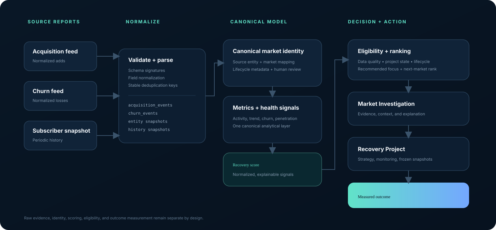
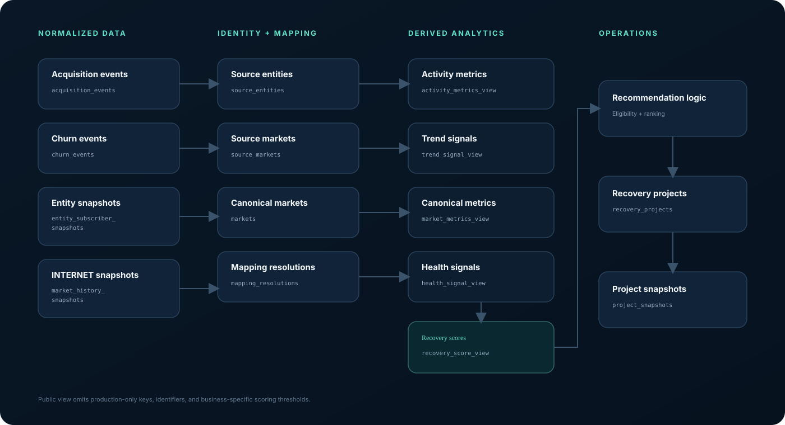

01
Fragmented operational evidence
Acquisition events, churn events, and subscriber snapshots must be normalized before they can support one decision.
A portfolio showcase of a telecommunications market-intelligence platform that unifies subscriber history, sales activity, disconnect behavior, market identity, lifecycle rules, and recovery-project state into one repeatable analytical workflow.
Portfolio-safe: all market names and metrics shown here are synthetic. No customer or production data is included.
Operational data arrived in different reports, at different geographic grains, with different meanings. The platform creates a controlled path from raw evidence to an actionable recommendation.
Acquisition events, churn events, and subscriber snapshots must be normalized before they can support one decision.
Source systems can describe the same operating area differently. A canonical market model prevents metrics from being compared across mismatched identities.
A distressed market can still be blocked by incomplete evidence, active recovery work, lifecycle state, or a review hold. Scoring and eligibility stay separate.
The reference architecture separates ingestion, identity, metrics, scoring, recommendation, and recovery-project measurement instead of collapsing them into one dashboard query.

Raw reports become typed events and snapshots before analytical use.
Source-entity and source-market records map into a canonical market layer.
Canonical metrics and health signals feed a single recovery-score universe.
Data quality, lifecycle, project state, and review holds determine actionability.
Switch between fictional market scenarios to see how trend, acquisition, churn, lifecycle, data quality, and recommendation context resolve into one investigation view.
Competitive churn and accelerating long-term decline make this market a high-priority investigation target.
Private implementation weights and action cutoffs are intentionally omitted from the public showcase.
Operational records move through persistence, mapping, and derived analytical layers. This keeps ingestion concerns separate from canonical business logic.

recovery_score_viewCurrent recovery scoring is intentionally centralized. Pages can classify, rank, and present the canonical score universe, but they do not invent independent score formulas.
raw events
↓
market_metrics_view
↓
health_signal_view
↓
recovery_score_view
↓
eligibility + recommendation + UIThe public model groups trajectory, momentum, acquisition balance, churn pressure, absolute impact, and recoverability. Missing evidence is not silently treated as healthy.
Composite scoring normalizes across valid inputs and tracks completeness separately.
A high recovery score does not bypass active-work, lifecycle, review-hold, or data-quality controls.
Subscriber-source reconciliation can warn operators without becoming an unintended hard gate.
New markets, limited-history markets, and no-longer-served markets are handled explicitly.
Source-market and source-entity records resolve into canonical market identities before aggregation.
Recovery-project baselines preserve historical truth. Legitimate corrections create a rebaseline rather than rewriting the original snapshot.
Incomplete historical coverage is surfaced and handled through narrow rules instead of being interpreted as good performance.
Non-exact market mappings remain reviewable rather than being silently forced into a canonical identity.
Starting a recovery project is controlled server-side and revalidates current recommendation state instead of trusting a stale browser decision.
Expensive nested analytical views are not redundantly loaded when classification and ranking can be derived from a canonical score read plus lightweight project state.
Cold navigation exposed PostgreSQL statement timeouts caused by duplicate nested recovery-view evaluation and unnecessarily broad historical event reads.
Overlapping derived views could recursively evaluate the same recovery universe more than once during a single request.
Rolling sales and disconnect reads were also bounded to the relevant analytical window and supported with targeted indexes.
After the performance path stabilized, shared recovery-domain logic was extracted from two oversized route files into a reusable data layer.
types.tsdomain typesnumeric.tsnormalizationclassification.tsquality + lifecyclerecommendation.tseligibility + rankingdashboard-data.tsdashboard loadermarket-detail-data.tsinvestigation loaderThis repository is a sanitized portfolio case study. It intentionally excludes credentials, Supabase project identifiers, customer records, addresses, employee information, real market distress data, and production scoring weights/cutoffs.